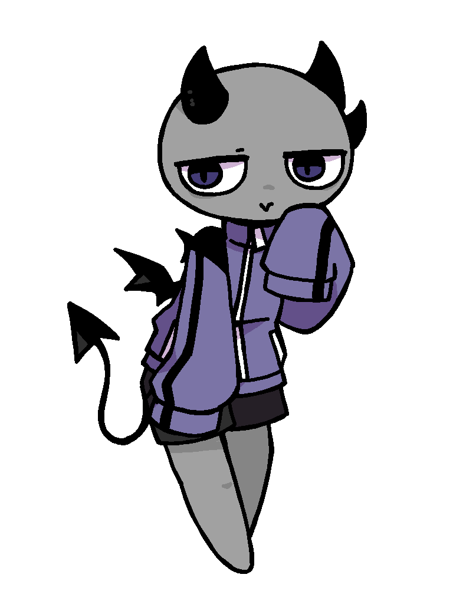

やる気にムラがある気まぐれなアクマ。本名はメリアデックだけど、長いので皆からはデックと呼ばれている。機械に強くプログラミングが得意。無口であまり人と交流しないが、オタモにはとてもなついている。角が多めに生えていたり羽が未発達で飛べなかったりと、生まれつき特殊な体質。
【性別】男性 【一人称】ボク 【身長】158cm 【好きなもの】ゲーム開発 / ホットミルク 【苦手なもの】デバッグ作業
←Back